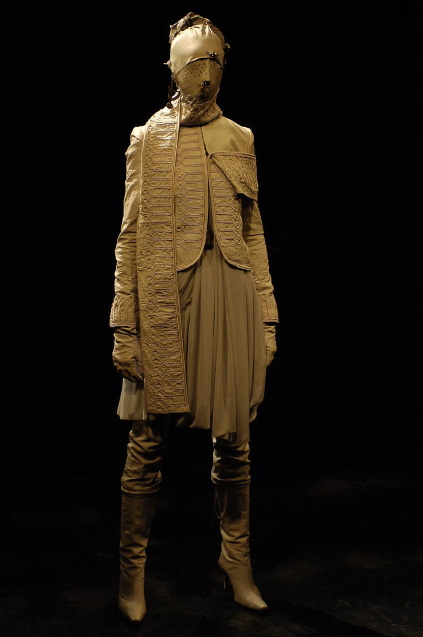
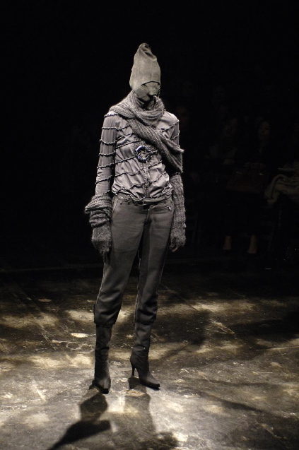
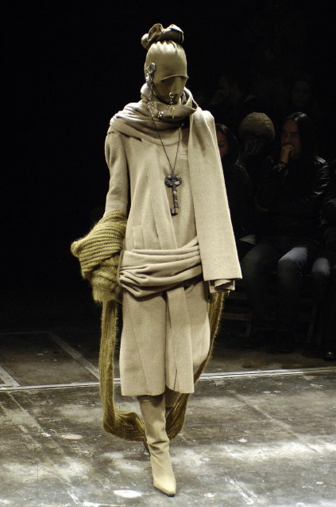

Jun Takahashi — Fall / Winter 2006 “Guruguru”
Presented in Paris for Fall Winter 2006, Jun Takahashi's “Guruguru” is a defining masterclass in dark runway surrealism. The title translates to turning round and round or winding, reflecting models cocooned in layers of raw-edged fabric, deconstructed knits, and protective face wraps.
Merging Tokyo street culture with avant-garde craftsmanship, the collection draws from post-punk grit, insectoid armor, and handcrafted decay.
The runway featured wrapped silhouettes in muted palettes of asphalt gray, decaying moss, and distressed black. Takahashi utilized distressed textures, elongated sleeves, and swaddled headpieces to evoke an eerie, melancholic beauty.
Each look conveyed an aura of survivalism and dark romance, standing as one of the most celebrated presentations in Undercover's history.



Explore the complete show documentation and runway review at Vogue Runway.